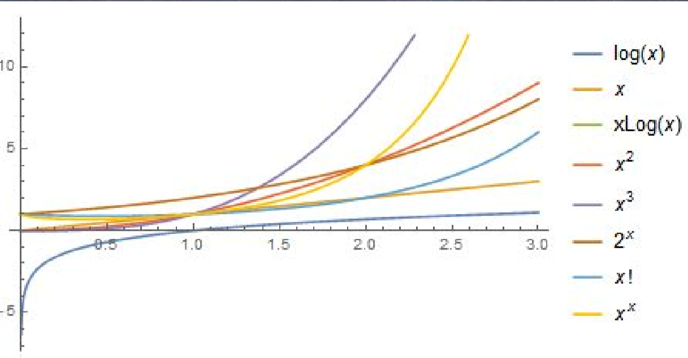
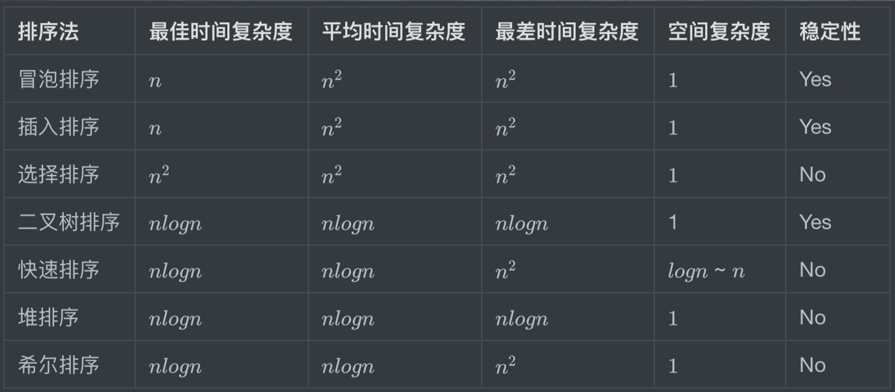
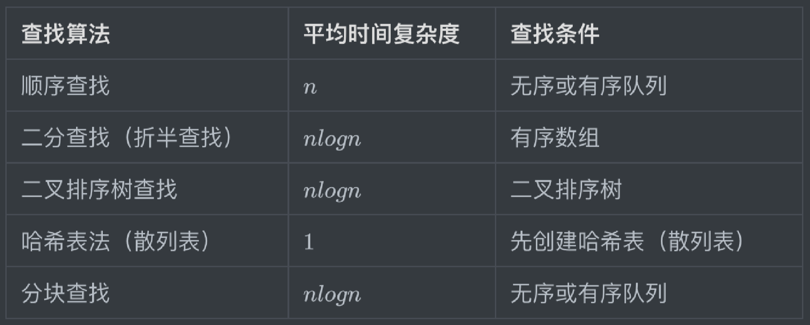

# 算法概论
# 什么是算法
算法是完成某个特定任务的过程。通常数据结构作为工具来辅助之行算法。所以有了一个 流传甚广的公式：程序 = 数据结构+算法。
- 算法不是数学，但是可以用数学来描述
- 我们要做一件事情，这个过程本身就是算法
- 我们常用的增删改查是算法的一部分
- 算法可以用自然语言、流程图、伪代码和计算机语言等手段来表示
- 在面向对象语言中，算法通常通过类的方法实现
算法的五大特征：
- 有穷性：算法必须能在执行有限个步骤之后终止
- 确切性：每一步骤必须有确切的定义
- 输入项：有 0 个或多个输入，用来规定初始情况，所谓 0 个输入是指算法本身定出了 初始条件
- 输出项：有一个或多个输出，是对输入数据处理后的结果。没有输出的算法毫无意义
- 可行性：算法中执行的任何计算步骤都是可以被分解为基本的可执行的操作步，每个 计算步都可以在有限时间内完成（也称之为有效性）。
# 怎样衡量算法
- 算法的好坏主要通过算法复杂度来衡量
- 时间复杂度
- 空间复杂度
- 正确性
- 可读性
- 健壮性
# 常见的复杂度
- 常数阶 O(1)
- 对数阶 O(logN)
- 线性阶 O(n)
- 线性对数阶 O(nlogN)
- 平方阶 O(n^2)
- 立方阶 O(n^3)
- k 次方阶 O(n^k)
- 指数阶 O(2^n)

# 计算算法复杂度
- 随着问题规模 n 的不断增大，时间复杂度不断增大，算法的执行效率越 低。
- 一般做算法复杂度分析的时候，遵循下面的技巧：
- 有几重循环，一般来说一重就是 O(n)，两重就是 O(n^2)，以此类推
- 如果有二分，则为 O(logN)
- 保留高项，去除常数项
# 必须要掌握的基本算法
- 枚举
- 递归
- 基本排序
- 基本查找
# 枚举算法
- 核心思想：枚举所有的可能。
- 本质：就是从所有候选答案中去搜索正确的解,使用该算法需要满足两个条件
- (1)可预先确定候选答案的数量；
- (2)候选答案的范围在求解之前必须有一个确定的集合。
- 特点：
- 枚举算法简单粗暴，暴力的枚举所有可能，尽可能地尝试所有的方法。
- 速度可能很慢，却是我们应该优先考虑的。
- 实现简单，并且得到的结果总是正确的。
# 递归算法
- 核心思想：通过重复将问题分解为同类的子问题而解决问题的方法。
- 特点：
- 函数可以通过调用自身来进行递归
- 递归可以完全取代循环
- 递归由下面两部分组成：
- （1）递归主体，就是要循环解决问题的代码
- （2）递归的跳出条件，递归不能一直递归下去，需要完成一定条件后跳出
# 关于排序算法

# 关于查找算法

# 算法思维养成
- 化繁为简
- 很难在第一时间内得到正确的思路的，这时候可以尝试一种由简至繁的思路。首先把问题规模缩小到非常容易解答 的地步。用来解决动态规划问题
- 分而治之
- 把问题分为两半，变成两个与原来问题同构的问题
- 当尝试这种思路时，其实只需要考虑两个问题：
- 1.一分为二以后，问题是否被简化了？
- 2.根据一分为二的两个问题的解，能否方便地得出整个问题的解？
- 化虚为实
- 使用另外一种形式进行替换
# 解决算法面试问题
面试的时候，在遇见算法题目的时候，应该揣摩面试官的意图，听好关键词，比如：有序的数列 做查找、要求算法复杂度是 O(logN)这类一般就是用二分的思想。
算法题目的解题思路分以下四步：
- 先降低数量级，拿可以计算出来的情况（数据）来构思解题步骤
- 根据解题步骤编写程序，优先将特殊情况做好判断处理，比如一个大数组的问题，如果数组 为两个数长度的情况
- 检验程序正确性
- 是否可以优化（由浅到深），有能力的话可以故意预留优化点，这样可以体现个人技术能力
← 排序算法 canvas 2d 入门 →